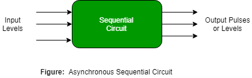

A Sequential circuit combinational logic circuit that consists of inputs variable (X), logic gates (Computational circuit), and output variable (Z).

Combinational circuit produces an output based on input variable only, but Sequential circuit produces an output based on current input and previous input variables. That means sequential circuits include memory elements which capable of storing binary information. That binary information defines the state of the sequential circuit at that time. A latch capable of storing one bit of information.

As shown in figure there are two types of input to the combinational logic :
- External inputs which not controlled by the circuit.
- Internal inputs which are a function of a previous output states.
Secondary inputs are state variables produced by the storage elements, where as secondary outputs are excitations for the storage elements.
Types of Sequential Circuits – There are two types of sequential circuit :
- Asynchronous sequential circuit – These circuit do not use a clock signal but uses the pulses of the inputs. These circuits are faster than synchronous sequential circuits because there is clock pulse and change their state immediately when there is a change in the input signal. We use asynchronous sequential circuits when speed of operation is important and independent of internal clock pulse.

But these circuits are more difficult to design and their output is uncertain.
- Synchronous sequential circuit – These circuit uses clock signal and level inputs (or pulsed) (with restrictions on pulse width and circuit propagation). The output pulse is the same duration as the clock pulse for the clocked sequential circuits. Since they wait for the next clock pulse to arrive to perform the next operation, so these circuits are bit slower compared to asynchronous. Level output changes state at the start of an input pulse and remains in that until the next input or clock pulse.

We use synchronous sequential circuit in synchronous counters, flip flops, and in the design of MOORE-MEALY state management machines.
We use sequential circuits to design Counters, Registers, RAM, MOORE/MEALY Machine and other state retaining machines.
GATE CS Corner Questions
Practicing the following questions will help you test your knowledge. All questions have been asked in GATE in previous years or in GATE Mock Tests. It is highly recommended that you practice them.
References –
Sequential Circuits
Sequential logic – Wikipedia